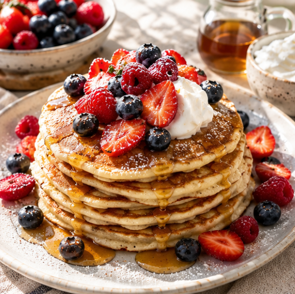
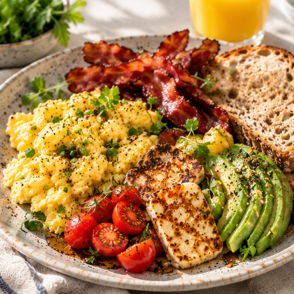
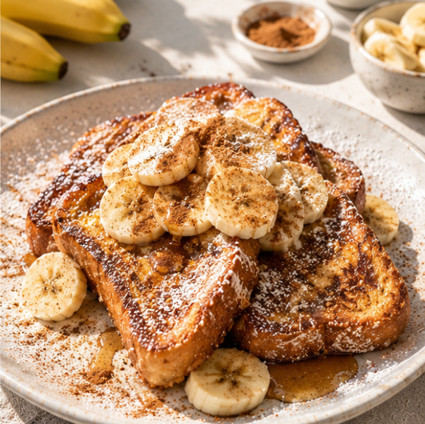

helgfrukost
-Långa morgnar och lyxiga smaker.
När tiden finns är det dags att koppla av och unna sig lite extra.
På helgen drar vi ner på tempot. När morgonstressen är borta får frukosten ta lite längre tid att laga och avnjutas. Här handlar det om njutning, goda dofter i köket och att starta dagen med en riktig guldkant.
3 klassiska helgfavoriter

Luftiga pannkakor eller frasiga våfflor:
En klassiker som garanterat skapar helgkänsla. Servera med färska bär, en klick vispad grädde eller grekiskt yoghurt och lite lönnsirap.
Bas-recept
Pannkakor (1 person):
Ingredienser:
- 1 dl mjölk
- 1 dl mjöl
- 1 ägg
Gör såhär:
- Vispa ihop alla ingredienser i en bunke.
- Stek i olja/smör i en stor stekpanna tills gyllene och frasig (och supergod).

Den stora brunchtallriken:
Krämig äggröra, krispigt bacon eller stekt halloumi, avokado och ett färskt surdegsbröd direkt från bageriet.

Fransk toast (Fattiga riddare):
Ett perfekt (och supergott) sätt att ta vara på dagsgammalt bröd. Doppa i äggsmet, stek i smör och toppa med kanel, socker och skivad banan.
Enkelt knep för den perfekta helgfrukosten:
Även när man vill gotta sig är det gott att balansera det söta eller feta med något fräscht -dukar du upp bär, nypressad juice eller skivad frukt vid sidan av känns frukosten som hämtad från ett hotell.